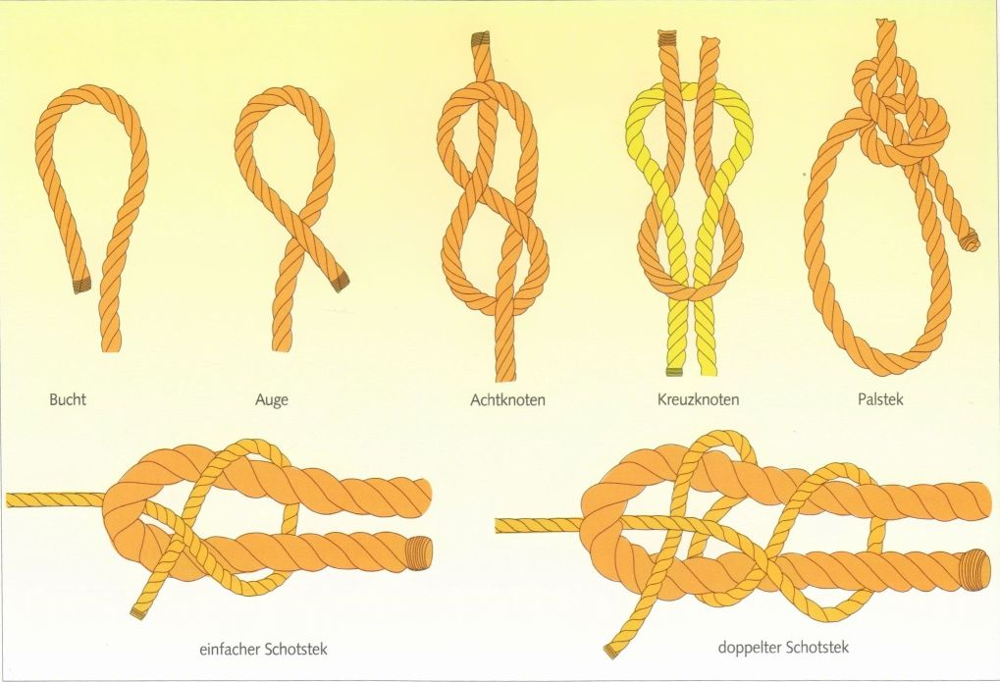
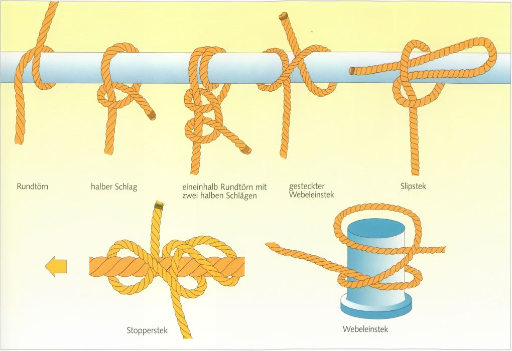
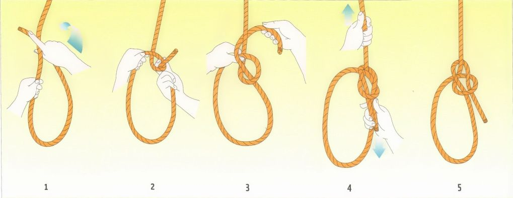
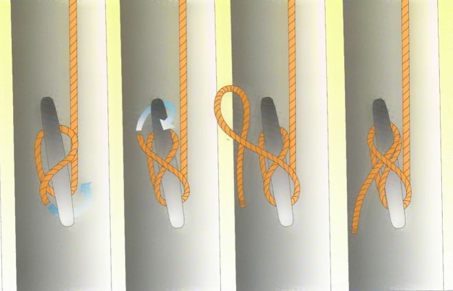
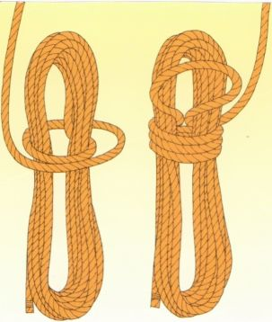
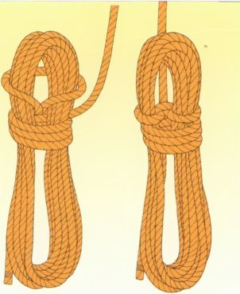
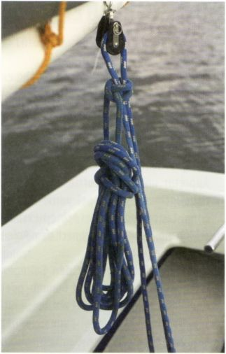
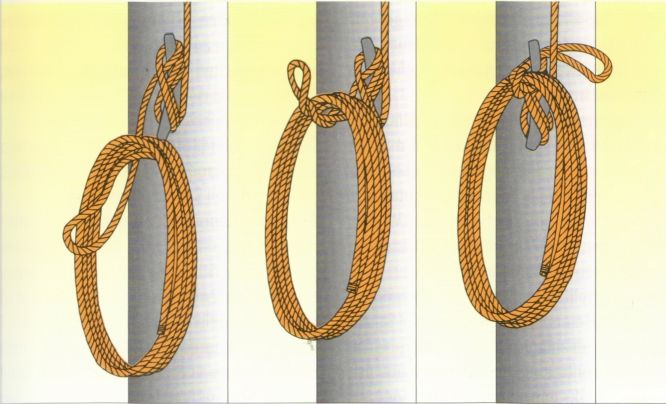
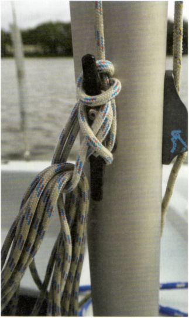

Всё, что служит для закрепления или крепления троса за что-либо, либо для соединения тросов между собой, называется узлом или штыком (Stek). Морские узлы должны
Ведь от надёжности такого узла может зависеть безопасность судна и экипажа.

Калышка (Bucht) - это конец троса, уложенный в виде шпильки для волос.
Петля (Auge) - морской термин для обозначения всех видов петель. Она может быть свободной, как показано здесь, либо неподвижной, как например огон (Augspleiß).
Восьмёрка (Achtknoten): Её всегда вяжут на ходовом конце (Tampen) шкотов, чтобы они не выскальзывали из блоков или направляющих колец (Leitöse).
Прямой узел (Kreuzknoten): Служит для соединения двух одинаково толстых концов из одного материала. Важно: он должен быть симметричным - ходовые концы должны выходить из петли другого конца с одной и той же стороны. Осторожно: даже правильно завязанный, на очень гладком синтетическом тросе он может распуститься.
Простой и двойной шкотовый узел (Schotstek): Оба служат для соединения двух разных по толщине концов или концов из разных материалов. Ходовые концы должны лежать с одной стороны. При жёстком синтетическом тросе настоятельно рекомендуется двойной шкотовый узел. Также при гладких равных по толщине концах двойной шкотовый узел предпочтительнее прямого узла.
Беседочный узел (Palstek): Это самый важный узел на борту. С его помощью можно завязать петлю (Auge) любого размера, которая не затягивается. Он служит для крепления к сваям, кнехтам (Poller) или кольцам, а в аварийной ситуации, чтобы удержать в воде человека, упавшего за борт. Двумя беседочными узлами можно надёжно связать и тросы между собой. Ходовой конец должен оставаться снаружи петли.

Круговой шлаг (Rundtörn) и полуштык (halber Schlag) - исходная основа для многих других узлов.
Полтора круговых шлага (1½ Rundtörn) и два полуштыка (2 halbe Schläge) - узловое соединение для временного крепления к трубе, кольцу, рангоутному дереву или шесту.
Штык на слип (Slipstek): Важен везде, где нужно или необходимо быстро освободить закреплённый конец, находящийся под нагрузкой. Один рывок за ходовой конец - и узел развязан.
Выбленочный узел (Webeleinstek): Служит для крепления к кнехтам и подобным предметам, если сам кнехт или швартовный конец не слишком толстые - иначе узел недостаточно затягивается. Дополнительно его обязательно нужно закрепить двумя полуштыками. Его можно набросить на кнехт, просто сложив две петли. В уложенном виде - иногда также на слип - выбленочный узел применяется для кратковременного крепления, например, кранцев (Fender) к леерному ограждению.
Стопорный узел (Stopperstek): С его помощью можно присоединить ходовой конец к тросу, находящемуся под нагрузкой, например носовой швартов к буксирному тросу. Он держит только до тех пор, пока трос находится под натяжением в направлении тяги.


Сначала обвести трос круговым шлагом вокруг основания утки (Klampe), но так, чтобы он не заклинивал сам себя. Затем наложить крестообразные шлаги в форме восьмёрки вокруг рогов утки. Обычно достаточно двух. Если при швартовке нужна дополнительная надёжность, в конце накладывают фиксирующую петлю (Kopfschlag) - продетый сквозь неё ходовой конец зажимается. Внимание: ходовой конец, зажимаемый фиксирующей петлёй, всегда должен пересекать утку.


Поскольку большинство концов имеют правую свивку, бухтовать их нужно также по часовой стрелке.
Бухты одинаковой длины «стягиваются» несколькими шлагами, наложенными вокруг них под прямым углом.
Затем последний шлаг протянуть наверху в виде петли, перекинуть через верх бухты и затянуть.


Сначала закрепить фал на утке у мачты, затем забухтовать его конец. Полученную бухту можно просто заложить за фал, но аккуратнее - повесить её на верхний рог утки. Последнюю петлю бухты протянуть сзади, перекрутить крест-накрест и получившуюся петлю пропустить за фалом и перевесить.
